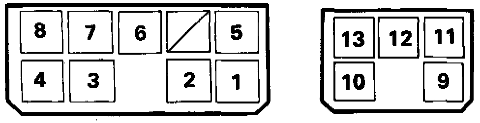
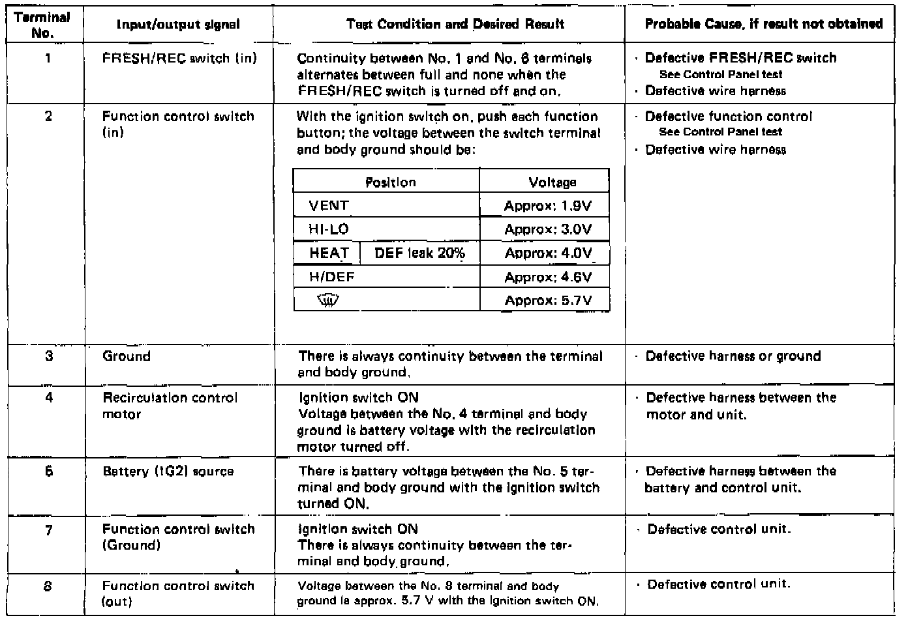

Operation CHARM
: Car repair manuals for everyone.
Home
>>
Acura
>>
1987
>>
Legend Coupe V6-2494cc 2.5L SOHC FI
>>
Repair and Diagnosis
>>
Heating and Air Conditioning
>>
Control Module HVAC
>>
Testing and Inspection
>>
Function Control Unit
Function Control Unit
Terminal Arrangement:

Function
Control Unit
Test
NOTE:
Use the digital multimeter (KS-AHM-32-003) to check.
